Diamond¶
Diamond utilizes iterative, quasi-Newton 2nd-order solvers to estimate certain generalized linear models (glms) with known covariance structure. A common use is fitting mixed effects models, with their covariance already being known by another means (e.g. after fitting in R using lme4). These 2nd-order iterative solvers are considerably faster than a full-blown solution, assuming that the covariances are known. Currently, Diamond does not solve for the covariance structure. This must be input a-priori. In addition, only logistic and ordinal logistic response variables are currently implemented. Mathematically, Diamond solves the following problem:
If  is the loglikelihood of the data given parameters
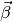, diamond minimizes
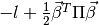
for a given matrix
is the loglikelihood of the data given parameters
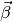, diamond minimizes
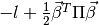
for a given matrix
For logistic regression, 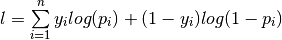 where 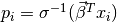
For ordinal logistic regression, 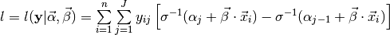
- where
- 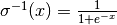 is the inverse logit function
- 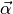 are the intercepts
- 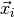 the features of observation

- 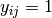 if and only if observation realizes response level

- 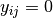 in all other cases
Optimization Details¶
The key idea is that we can _almost_ separate the optimization problem across levels fo the random effects. But of course the main effects are common to the model for each level, so we can’t really separate the problem. This does, however, suggest a strategy that alternates between two stages:
- solve for main effects
- solve for random effect coefficients with the main effects from (1) treated as constants
Because the whole problem is convex this alternating iteration will converge.
The advantage of this approach is that the sub-problem in (2) has a block diagonal Hessian matrix and so we can afford to invert it. This will let us use a newton-like method that will converge faster than a 1st order approach.
Diamond was designed to tackle large problems with many random effect levels. One of the biggest bottlenecks with a standard Newton iterative approach is the need to invert the Hessian at every step. Even with ours being block-diagonal, this can be a considerably slow operation. To speed up convergence, we employ a fixed-Hessian approach, where we compute the Hessian once at the beginning, then treat it as fixed throughout all iterations.
In principle, one could also separate the problem in (2) across levels and solve them in parallel, potentially making it faster still / sidestepping the need for tons of memory.
The reason the fixed Hessian might be useful is related to the convexity of the problem. One helpful way of thinking about it is to think of gradient descent, Newton’s method and the fixed Hessian as all being example of majorization-minimization algorithms.
The basic idea is that instead of minimizing our function f (which we don’t know how to do analytically) we form a local approximation to f with a simple form and minimize that. Then we iterate between forming new local approximations and minimizing them.
The choice of the local approximation gives different methods:
- gradient descent: a “diagonal” quadratic approximation INSERT EQUATION HERE
- newton-raphson: a 2nd order taylor approximation (with hessian) INSERT EQUATION HERE
- fixed-Hessian: a quadratic approximation like the taylor series, but with a fixed Hessian, chosen to bound the 2nd order taylor series. The fixed Hessian matrix must be “larger” than the true Hessian (the difference must be positive definite).

Intuitively, the best quadratic approximation is the taylor series. But using a non-diagonal bound on the Hessian may be a much better approximation than the diagonal bound that gives us gradient descent.
Step Size¶
When using the fixed-Hessian method, we can often select better step sizes by using a conjugate gradient approach.
To select the modified step size:
- Take the step direction (u) from the fixed hessian approach
- Calculate the restriction of f(x) in the direction of u, and (using the chain rule) find the exact gradient and hessian for the restriction
- Use the gradient/hessian to find a newton step size (a newton step for the restricted function along u)
Happily, we don’t need to invert the true hessian to compute the step size, and so we can do this efficiently at each iteration
The idea is to use the step direction from the fixed-Hessian method, but then to take advantage of this property to do a better job selecting the step size than we would by using the fixed hessian alone. Minka claims this is significantly better in practice.
More Information¶
For a more detailed discussion, see [http://research.microsoft.com/en-us/um/people/minka/papers/logreg/minka-logreg.pdf](http://research.microsoft.com/en-us/um/people/minka/papers/logreg/minka-logreg.pdf) section 5: Fixed-Hessian Newton method
Conjugate Gradient Method: [https://www.cs.cmu.edu/~quake-papers/painless-conjugate-gradient.pdf](https://www.cs.cmu.edu/~quake-papers/painless-conjugate-gradient.pdf)
Contents: